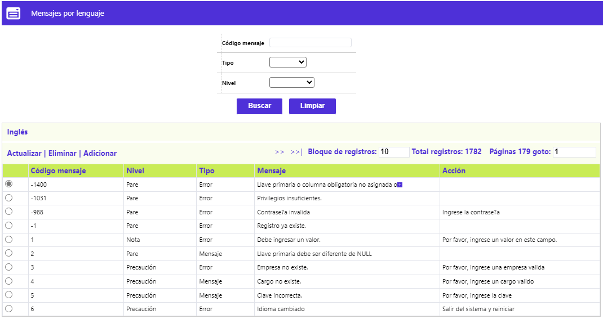
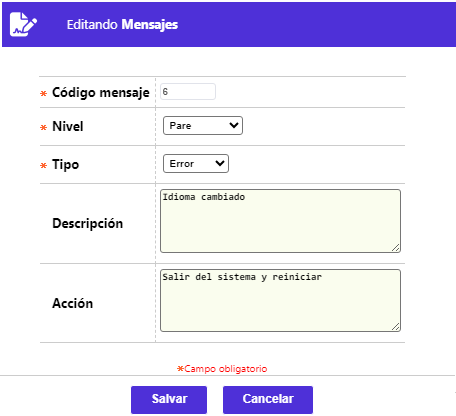

Mensajes
Mediante esta función se habilita la consulta y mantenimiento de los diferentes componentes alfanuméricos de los mensajes que despliega el sistema, particularmente cuando se pretende realizar alguna acción indebida o diferente a las permitidas para cada formulario o procedimiento; en algunos puntos del sistema también sirven para informar sobre el resultado exitoso de un proceso o acción realizado. Dado que un mismo mensaje puede ser utilizado en más de un procedimiento asociado a varios formularios, debe tenerse especial cuidado al modificarse el contenido de los mismos. Adicional a los enlaces: Actualizar, Eliminar y Adicionar, el formulario cuenta con el enlace Inglés, el que, al invocarse, si se está creando el registro, aparecen los campos Descripción (Mensaje) y Acción, para ser diligenciados en ese idioma.

Filtro: Con el propósito de facilitar el ubicar y/o identificar un mensaje en particular, se dispone de los siguientes criterios:
|
Código Mensaje |
Campo alfanumérico obligatorio de cinco dígitos, en el que se digita el código asignado a cada registro o mensaje y por el cual poder realizar la consulta. |
|
Tipo |
Campo que posee lista de valores tipo combo de la que puedes seleccionarse entre: Nulo, Mensaje o Error, característica que es asignada a cada registro o mensaje y por el cual poder realizar la consulta. |
|
Nivel |
Campo que posee lista de valores tipo combo de la que puedes seleccionarse entre: Nulo, Pare, Nota o Precaución, característica que es asignada a cada registro o mensaje y por el cual poder realizar la consulta. |
Adicionar: Al activar ese enlace se despliega un formulario con los siguientes campos:

|
Código Mensaje |
Campo alfanumérico obligatorio de cinco dígitos, en el que se digita el código asignado a cada registro o mensaje y por el cual poder realizar la consulta. |
|
Tipo |
Campo que posee lista de valores tipo combo de la que puedes seleccionarse entre: Nulo, Mensaje o Error, característica que es asignada a cada registro o mensaje y por el cual poder realizar la consulta. |
|
Nivel |
Campo que posee lista de valores tipo combo de la que puedes seleccionarse entre: Nulo, Pare, Nota o Precaución, característica que es asignada a cada registro o mensaje y por el cual poder realizar la consulta. |
|
Descripción |
Campo alfanumérico de 500 posiciones, no obligatorio, en el cual se puede registrar información que ilustre al usuario sobre el evento presentado. |
|
Accion |
Campo alfanumérico de 500 posiciones, no obligatorio, en el cual se puede registrar información que le permita al usuario tomar las acciones necesarias para superar el incidente o buscar el apoyo necesario. |
Actualizar: Al activar ese enlace se despliega un nuevo formulario en el cual el único campo no modificable es Código mensaje:
